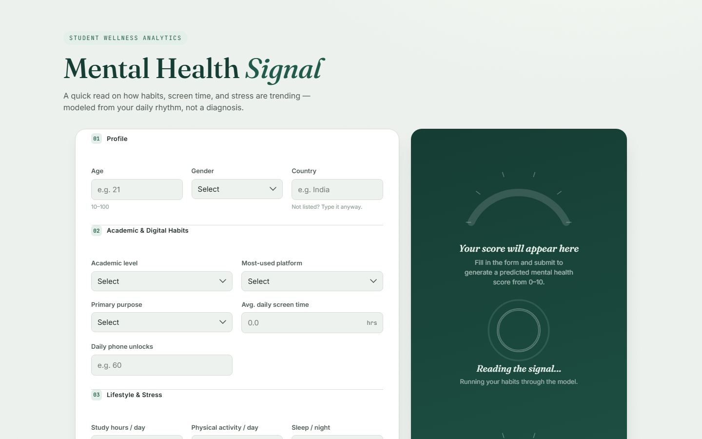

AI · Machine learning
Mental Health Signal
Student Wellness Analytics — a form-based tool that reads daily habits and estimates a wellness score from 0 to 10.
- Type
- ML-powered web app
- Model
- Random Forest · R² 0.92
- Role
- Design & development
- Stack
- Python, scikit-learn, FastAPI
- Hosting
- Render
- Status
- Live

Visit live site ↗Screenshot of the live site. Click it to open the real thing.
Overview
How it works
Users complete three short sections — profile, academic & digital habits, and lifestyle & stress — then press “Read my signal”. The model returns a score showing how habits, screen time and stress are trending. Under the hood, a Random Forest model built with scikit-learn (R² of 0.92) is served by a FastAPI backend with Pydantic input validation.
Informational only. This is not a clinical assessment or diagnosis, and the app says so clearly to users.
Inputs it reads
- Age, gender and country
- Academic level, platform and purpose of use
- Daily screen time and phone unlocks
- Study hours, physical activity and sleep
- Perceived stress level
- Predictions in real time via a FastAPI backend
Have data you want to put to work?
I build ML-backed tools with clear interfaces and responsible messaging.
Discuss your project →